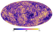
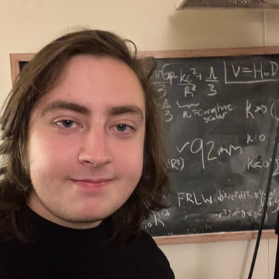

Sam Coscia Website

Curriculum Vitae
Senior Thesis
CMB Power Spectrum Code

Graduate of Reed College in physics, and a student who is
passionate about many areas of the subject including cosmology,
astrophysics, high energy particle physics, and nuclear physics.
Recently finished a Post-Baccalaureate Internship at Los Alamos
National Lab in Intelligence and Space Research. Currently
researching multifractality in solar weather data.